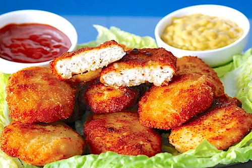
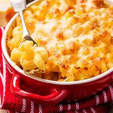
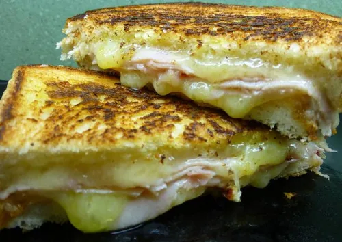
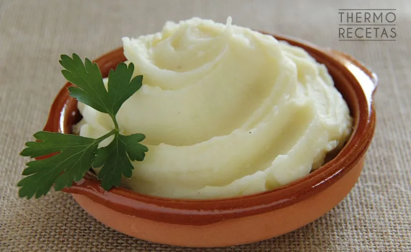
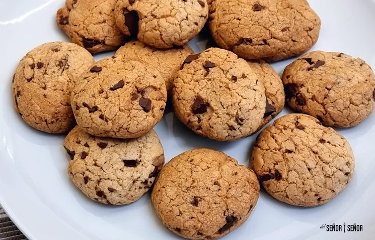

Menú Infantil
Nuggets de Pollo
- Pechugas de pollo
- Pan rallado
- Huevo
- Sal
- Aceite para freír
Instrucciones:
- Corta el pollo en trozos pequeños.
- Pásalos por huevo batido y luego por el pan rallado.
- Fríe los nuggets en aceite caliente hasta que estén dorados.
- Escurre sobre papel absorbente y sirve.
Macarrones con Queso
- Macarrones
- Queso cheddar rallado
- Leche
- Mantequilla
- Sal
Instrucciones:
- Cuece los macarrones en agua con sal.
- En una sartén, derrite la mantequilla y añade la leche.
- Agrega el queso y remueve hasta que se derrita.
- Mezcla la salsa de queso con los macarrones y sirve.
Mini Pizzas
- Pan pita o tortillas
- Salsa de tomate
- Queso mozzarella
- Jamón
- Orégano
Instrucciones:
- Coloca las tortillas o pan pita en una bandeja de horno.
- Unta salsa de tomate por encima.
- Añade el queso mozzarella y los ingredientes deseados.
- Hornea a 180°C por 10 minutos o hasta que el queso se derrita.
Sándwich de Jamón y Queso
- Pan de molde
- Jamón
- Queso
- Mantequilla
- Ketchup (opcional)
Instrucciones:
- Unta mantequilla en una cara de cada rebanada de pan.
- Coloca jamón y queso entre las rebanadas de pan.
- Tuesta el sándwich en una sartén hasta que esté dorado y el queso se derrita.
- Sírvelo caliente con ketchup al gusto.
Pancakes
- Harina
- Huevo
- Leche
- Mantequilla
- Miel o jarabe
Instrucciones:
- Mezcla la harina, leche y huevo en un bol.
- Calienta un poco de mantequilla en una sartén.
- Vierte la masa en la sartén y cocina hasta que esté dorada por ambos lados.
- Sírvelo con miel o jarabe.
Puré de Patatas
- Patatas
- Mantequilla
- Leche
- Sal
Instrucciones:
- Hierve las patatas hasta que estén blandas.
- Pélalas y aplástalas con un tenedor.
- Mezcla con mantequilla y leche hasta obtener un puré suave.
- Sazona con sal al gusto.
Galletas de Chocolate
- Harina
- Azúcar
- Huevo
- Mantequilla
- Chispas de chocolate
Instrucciones:
- Mezcla la harina, azúcar y mantequilla en un bol.
- Agrega el huevo y las chispas de chocolate.
- Forma pequeñas bolas de masa y colócalas en una bandeja de horno.
- Hornea a 180°C por 12-15 minutos.
Brochetas de Frutas
- Fresas
- Plátano
- Melón
- Uvas
- Palillos de brocheta
Instrucciones:
- Corta las frutas en trozos pequeños.
- Inserta las frutas en los palos de brocheta, alternando los tipos de fruta.
- Sírvelas frescas o acompáñalas con yogurt.